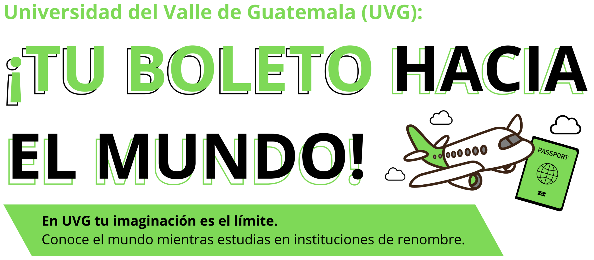

Una guatemalteca estudiando sostenibilidad en Noruega
Aplicaciones abiertas para el ciclo 2026–2027
Encuentra tu destino en el mapa global UVG
Aprender a vivir solo en Madrid y madurar en el camino
Llevamos la formación académica de la Universidad del Valle de Guatemala más allá de nuestras fronteras: intercambios, convenios y experiencias culturales en universidades aliadas alrededor del mundo.
El programa
El Programa de Intercambios Estudiantiles ofrece estancias académicas de uno o dos semestres en una universidad extranjera aliada con la UVG.
Cursos convalidados, redes de contacto internacionales y una experiencia personal que transforma carreras enteras. Más de 60 años de tradición académica abren puertas en cuatro continentes.
25+
Universidades aliadas
14
Países de destino
4
Continentes
60+
Años de tradición UVG
Mapa mundial UVG
Cada punto en el mapa es una historia esperando ser tuya.
Explora los destinos en los que la UVG tiene presencia. Haz clic en cualquier marcador para ver los detalles del programa, semestre, cupos e idioma de instrucción.
Convenio activo
Próxima oportunidad
¿Listo para empezar tu aventura?
Agenda una asesoría con la oficina de Relaciones Internacionales y exploremos juntos las opciones que mejor se ajusten a tu carrera y tus tiempos.
Correo CDI
uvgglobal
@uvg.edu.gt
@uvg.edu.gt
OficinaCIT-620
CampusCampus Central
Teléfono2507-1500 · Ext. 21593
HorarioLunes a Viernes · 8:00 – 17:00